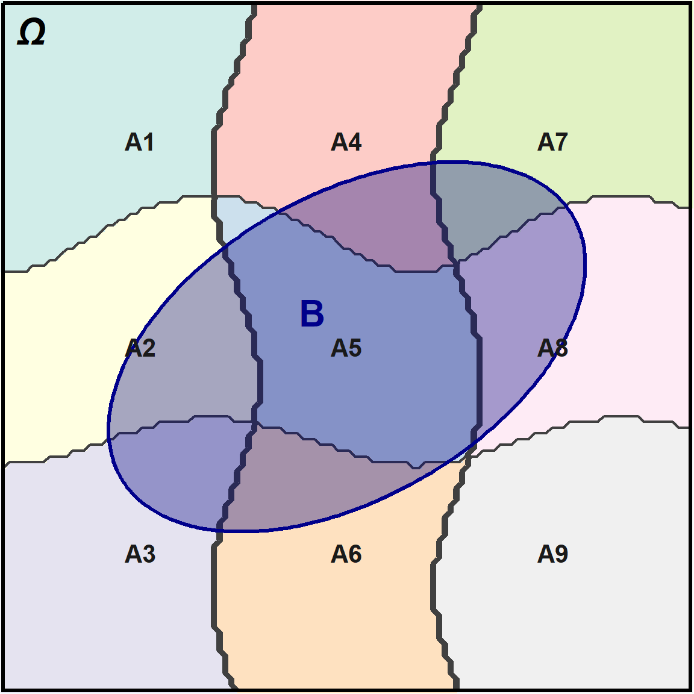

Sesión 9: Pruebas Diagnósticas I
Teorema de Bayes: validación y rendimiento de una prueba diagnóstica
2026-10-12
Sesión 9: Pruebas Diagnósticas I
Teorema de Bayes: validación y rendimiento de una prueba diagnóstica
Jesús Esteban Hernández
Objetivos de aprendizaje
Comprender los fundamentos de la validación diagnóstica en biomedicina.
Construir e interpretar tablas de contingencia \(2 \times 2\).
Calcular e interpretar sensibilidad, especificidad, VPP y VPN.
Analizar el impacto de la prevalencia mediante el Teorema de Bayes.
Repaso: Experimento Aleatorio y Espacio Muestral
Experimento Aleatorio:
- Repetible en las mismas condiciones.
- Resultados distintos con mismas condiciones iniciales.
- Todos los resultados posibles se conocen a priori.
- No se puede predecir el resultado particular.
Espacio Muestral (\(\Omega\)): conjunto de todos los resultados posibles.
- Resultado elemental (\(\omega \in \Omega\)): desenlace individual.
- Ejemplo: dado, \(\Omega = \{1, 2, 3, 4, 5, 6\}\).
Tipos de Espacios Muestrales
| Finito |
Grupo sanguíneo |
\(\{A, B, AB, O\}\) |
Compatibilidad con A |
| Infinito Numerable |
Crisis asmáticas/año |
\(\{0, 1, 2, \dots\}\) |
Más de 3 crisis |
| No Numerable |
Glucosa en ayunas |
\((0, +\infty)\) |
Criterio diabetes |
Espacio Probabilístico \((\Omega, \mathcal{A}, P)\)
Estructura matemática que modela un experimento aleatorio:
- \(\Omega\): espacio muestral.
- \(\mathcal{A}\): \(\sigma\)-álgebra de sucesos.
- \(P\): medida de probabilidad \(P: \mathcal{A} \rightarrow [0,1]\).
Axiomas de Kolmogorov
- A1: \(P(A) \ge 0, \quad \forall A \in \mathcal{A}\)
- A2: \(P(\Omega) = 1\)
- A3: Para sucesos mutuamente disjuntos:
\[P\left( \bigcup_{i=1}^{\infty} A_i \right) = \sum_{i=1}^{\infty} P(A_i)\]
Propiedades Fundamentales
- \(P(A') = 1 - P(A)\)
- \(P(\emptyset) = 0\)
- \(A \subset B \implies P(A) \le P(B)\)
- \(P(A \cup B) = P(A) + P(B) - P(A \cap B)\)
Independencia de Sucesos
\(A\) y \(B\) independientes:
\[P(B \mid A) = P(B) \iff P(A \cap B) = P(A) \cdot P(B)\]
¡Atención!
- Disjuntos: \(A \cap B = \emptyset \implies P(A \cap B) = 0\).
- Dos sucesos incompatibles con \(P(A), P(B) > 0\) NUNCA son independientes.
Probabilidad Condicionada
\[P(B \mid A) = \frac{P(A \cap B)}{P(A)}, \quad P(A) > 0\]
Ley multiplicativa:
\[P(A \cap B) = P(A) \cdot P(B \mid A)\]
Para \(n\) eventos:
\[P(A_1 \cap \dots \cap A_n) = P(A_1) \cdot P(A_2 \mid A_1) \cdots P(A_n \mid A_1 \cap \dots \cap A_{n-1})\]
Visualización de una Partición de \(\Omega\)

Teorema de la Probabilidad Total
Sea \(A_1, \dots, A_k\) una partición de \(\Omega\):
\[P(B) = \sum_{i=1}^{k} P(A_i) \cdot P(B \mid A_i)\]
Teorema de Bayes
\[P(A_j \mid B) = \frac{P(A_j) \cdot P(B \mid A_j)}{\sum_{i=1}^{k} P(A_i) \cdot P(B \mid A_i)}\]
Bayes aplicado al diagnóstico
Con causa binaria \((E, \bar{E})\):
\[P(E \mid S) = \frac{P(E) \cdot P(S \mid E)}{P(E) \cdot P(S \mid E) + P(\bar{E}) \cdot P(S \mid \bar{E})}\]
Conclusiones clave:
- La posterior \(P(E \mid S)\) depende de la previa \(P(E)\).
- Un síntoma solo ayuda a diagnosticar si no es independiente de la enfermedad.
- Los síntomas útiles discriminan, no son los más frecuentes.
Matriz de Confusión \(2 \times 2\)
| Positivo (\(T+\)) |
\(VP\) |
\(FP\) |
\(VP + FP\) |
| Negativo (\(T-\)) |
\(FN\) |
\(VN\) |
\(FN + VN\) |
| Total |
\(VP + FN\) |
\(FP + VN\) |
\(N\) |
- \(VP\): Verdaderos Positivos
- \(FP\): Falsos Positivos
- \(FN\): Falsos Negativos
- \(VN\): Verdaderos Negativos
Sensibilidad y Especificidad
Sensibilidad (s): probabilidad de positivo en enfermos.
\[s = \frac{VP}{VP + FN}\]
Especificidad (e): probabilidad de negativo en sanos.
\[e = \frac{VN}{FP + VN}\]
Propiedades intrínsecas de la prueba (no dependen de la prevalencia).
Valores Predictivos
VPP: probabilidad de estar enfermo dado positivo.
\[\text{VPP} = \frac{VP}{VP + FP}\]
VPN: probabilidad de estar sano dado negativo.
\[\text{VPN} = \frac{VN}{FN + VN}\]
Dependen de la prevalencia de la enfermedad.
Factor de Bayes
\[Odd(E \mid S) = Odd(E) \cdot \frac{P(S \mid E)}{P(S \mid \bar{E})} = Odd(E) \cdot \text{FB}\]
El factor de Bayes (Razón de Verosimilitud, LR) cuantifica cuánto cambia la odds:
- RV+: \(s / (1 - e)\)
- RV−: \((1 - s) / e\)
RV en función de s y e
\[Odd(E \mid S) = Odd(E) \cdot \frac{s}{1 - e}\]
- Solo depende de la validez del test y de la previa.
- Simplifica enormemente el uso clínico del Teorema de Bayes.
Influencia de la Prevalencia
- Se y Sp: propiedades intrínsecas de la prueba.
- VPP y VPN: dependen de la prevalencia.
\[\text{VPP} = \frac{s \cdot p}{(s \cdot p) + ((1 - e)(1 - p))}\]
En cribado (prevalencia baja), el VPP cae drásticamente → muchos falsos positivos requieren confirmación.
Caso Práctico en R
Trabajaremos con _data/preven_cc.csv:
gold_std: Sano / Enfermobiomarcador: valor continuo
Punto de corte: 52 → Positivo si biomarcador > 52.
Importar datos y construir la matriz
Enfermo Sano
Test + 137 408
Test - 20 435
Cálculo manual de s y e
sensibilidad especificidad
0.8726115 0.5160142
Evaluación con epiR
statistic est lower upper
1 ap 0.45500000 0.42380745 0.48645821
2 tp 0.15700000 0.13498766 0.18105255
3 se 0.12738854 0.07957909 0.18986556
4 sp 0.48398577 0.44976414 0.51831970
5 diag.ac 0.42800000 0.39708390 0.45934120
6 diag.or 0.13692424 0.08403282 0.22310624
7 nndx -2.57317002 -3.42683175 -2.12469057
8 youden -0.38862570 -0.47065677 -0.29181474
9 pv.pos 0.04395604 0.02705301 0.06707227
10 pv.neg 0.74862385 0.70999733 0.78452993
11 lr.pos 0.24687020 0.16308632 0.37369715
12 lr.neg 1.80296928 1.64479815 1.97635085
13 p.rout 0.54500000 0.51354179 0.57619255
14 p.rin 0.45500000 0.42380745 0.48645821
15 p.tpdn 0.51601423 0.48168030 0.55023586
16 p.tndp 0.87261146 0.81013444 0.92042091
17 p.dntp 0.95604396 0.93292773 0.97294699
18 p.dptn 0.25137615 0.21547007 0.29000267
Alternativa con cut()
Outcome + Outcome - Total
Test + 20 435 455
Test - 137 408 545
Total 157 843 1000
Point estimates and 95% CIs:
--------------------------------------------------------------
Apparent prevalence * 0.46 (0.42, 0.49)
True prevalence * 0.16 (0.13, 0.18)
Sensitivity * 0.13 (0.08, 0.19)
Specificity * 0.48 (0.45, 0.52)
Positive predictive value * 0.04 (0.03, 0.07)
Negative predictive value * 0.75 (0.71, 0.78)
Positive likelihood ratio 0.25 (0.16, 0.37)
Negative likelihood ratio 1.80 (1.64, 1.98)
False T+ proportion for true D- * 0.52 (0.48, 0.55)
False T- proportion for true D+ * 0.87 (0.81, 0.92)
False T+ proportion for T+ * 0.96 (0.93, 0.97)
False T- proportion for T- * 0.25 (0.22, 0.29)
Correctly classified proportion * 0.43 (0.40, 0.46)
--------------------------------------------------------------
* Exact CIs
Discusión
¿Cómo cambia el VPP si la prevalencia fuese del 1% en lugar del 15%?
¿Merece la pena aplicar este test a toda la población o solo a grupos de riesgo?
¿Qué pasa si bajamos el punto de corte a 45?
Tarea: repite el análisis con distintos puntos de corte y construye la curva ROC.
Referencias
epiR: Stevenson M et al. (2024). epiR: Tools for the Analysis of Epidemiological Data.
Pepe, M.S. (2003). The Statistical Evaluation of Medical Tests for Classification and Prediction. Oxford.
Zhou, X.H. et al. (2011). Statistical Methods in Diagnostic Medicine. Wiley.